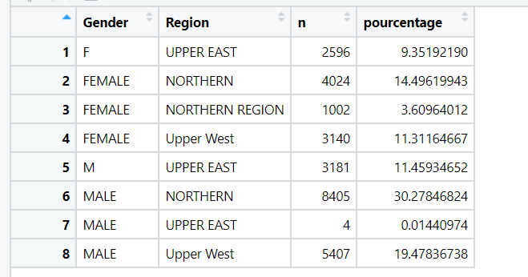
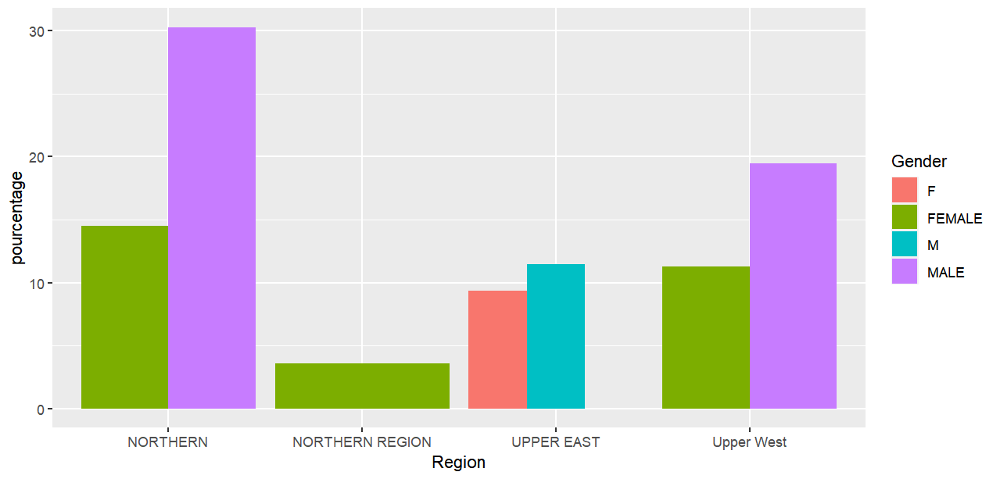

we checked the inconsistency in the


We have detected the inconsistency of some variables
For the gender, the modalities F have been replaced by Female
For M by Male then globally the percentage of missing values is estimated at 8 %.
We then looked at the distribution of some quantitative variables.
which led us to postulate for a missing value estimation approach by the median
and for the qualitative values we used the